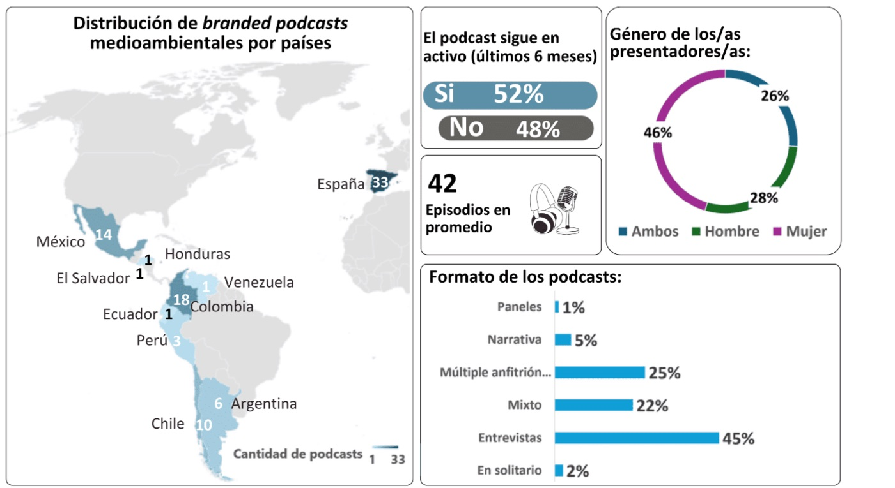

Este estudio examina los branded podcasts medioambientales como herramienta de comunicación estratégica en la responsabilidad social (RS), en respuesta a la creciente preocupación por la crisis ecosocial. Estos podcasts permiten a las organizaciones alinearse con las preocupaciones ante los retos socioambientales y establecen una conexión más auténtica con sus públicos. La investigación, de carácter exploratorio y descriptivo, realiza una entrevista en profundidad y un análisis mixto de contenido a 88 podcasts en español alojados en Spotify. Los resultados muestran que las empresas, ONG y universidades son las principales organizaciones productoras de estos contenidos, con un aumento significativo entre 2020 y 2023. España, Colombia y México destacan como los países con mayor número de branded podcasts medioambientales. Entre las principales temáticas abordadas están la crisis climática, la gestión ecológica de recursos y las soluciones renovables. Existe una correlación entre las organizaciones creadoras y la actividad reciente del podcast: las empresas y universidades tienden a mantener más activos sus branded podcasts. Además, los podcasts referenciados en la web de la organización son más propensos a mantenerse activos, lo que indica que, cuando se integran en las estrategias globales de comunicación organizacional, tienen mayor continuidad. Los podcasts ofrecen ventajas como el fortalecimiento de la reputación y la creación de comunidades comprometidas, además de requerir menos recursos técnicos. Sin embargo, enfrentan retos como la dificultad de captar grandes audiencias por su enfoque de nicho, el riesgo de ser percibidos como greenwashing y el posible uso creciente de la inteligencia artificial en su producción.
Artículos en revistas · 2024
Branded podcasts medioambientales: Desafíos y oportunidades ante la crisis ecosocial
Revista Internacional de Relaciones Públicas, 14(28)
